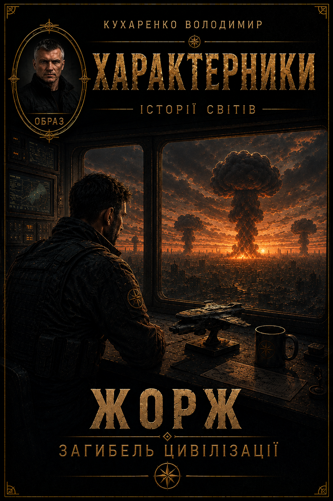
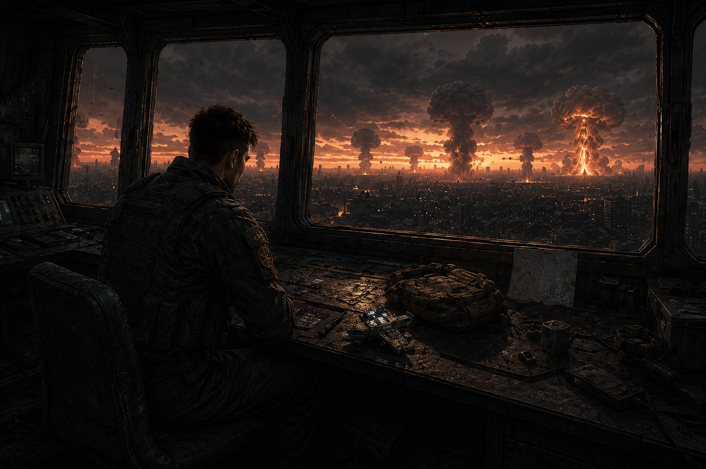

Chapter 1
Georges wakes aboard an orbital station above the Zero Plane, a world still scarred by the Great Ash.
Read the full chapter
Loading chapter…

Georges sets out on what should be a routine mission: escorting a scientific shipment to an allied world. But after an attack at a transport platform, he is cut off from his unit and witnesses the rapid collapse of an entire civilization. Over three days amid the chaos, he must fight to survive and find an answer to one question: who is destroying this world, and why?
This story is part of Stories of Worlds, a collection that expands the Kharakternyky universe through other characters, worlds and eras.
Georges wakes aboard an orbital station above the Zero Plane, a world still scarred by the Great Ash.
Loading chapter…
A routine mission takes Georges and his unit through a portal to an allied world.
Loading chapter…
The escort mission turns into a fight for survival after a sudden attack.
Loading chapter…
Cut off from his unit, Georges spends three days trying to understand the violence unfolding around him.
Loading chapter…

The civilization collapses into chaos as nuclear strikes destroy cities and the orbital station.
Loading chapter…
Back on the Zero Plane, Georges begins to connect the clues and resolves to find those responsible.
Loading chapter…